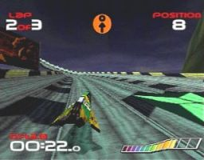
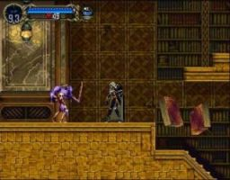

|
PCSX4ALL WIZ/CAANOO (08/05/2012) |
||
|
 |
||
08-05-2012: PCSX4ALL WIZ/CAANOO 2.3: - Chui: Improved BIOS emulation (HLE). Now Gran Turismo or R-Type Delta works properly. - Chui: Better recompiler performance. - Chui: Ridge Racer Revolution pad bug fixed using HLE. - Franxis: Added wARM v2 (in both WIZ and CAANOO). Thanks to Notaz. - Franxis: Improved ARMv5 divide functions. - Franxis: Align memory allocations to 1024 bytes. - GPU: Improved frameskip (better performance). - GPU: Implemented several types of auto-frameskip (see documentation for details). - GPU: Improved progressive interlace (better performance). - GPU: 4bit sprite optimization. Thanks to Notaz. - GPU: Blit mask implemented (for 512 and 640 width video modes) to improve performance. - GPU: Divide table more accurate. - GPU: Fix graphic bugs in Soul Blade and others (fix triangles GPU test range). - GPU: Skip duplicated DMA list entries per frame. Better loop detection. - GPU: Remove Abbe's Odyssey hack (not needed). - SPU: Same timing for NTSC and PAL. Some other fixes. - Several other bug-fixes and clean-up. |
||
10-04-2011: PCSX4ALL WIZ/CAANOO 2.2: - Fixed bug in the frame limiter. |
||
09-04-2011: PCSX4ALL WIZ/CAANOO 2.1: - Optimizations in the SPU. - Compatibility improvements and optimizations in GPU. - Compatibility improvements in HLE. Thanks to Notaz. |
||
29-12-2010: PCSX4ALL WIZ/CAANOO 2.0: - Major optimizations in the recompiler. - Auto-BIAS option added. - Idle-loop detection. - Complete GTE in ARMv5 assembler. - Optimizations in GPU and SPU. - Added CAANOO port. |
||
31-07-2010: PCSX4ALL WIZ 1.0: - First release for the gp32spain.com GP2X WIZ programming competition 2010. |
- Franxis (franxism@gmail.com) 2004-2011